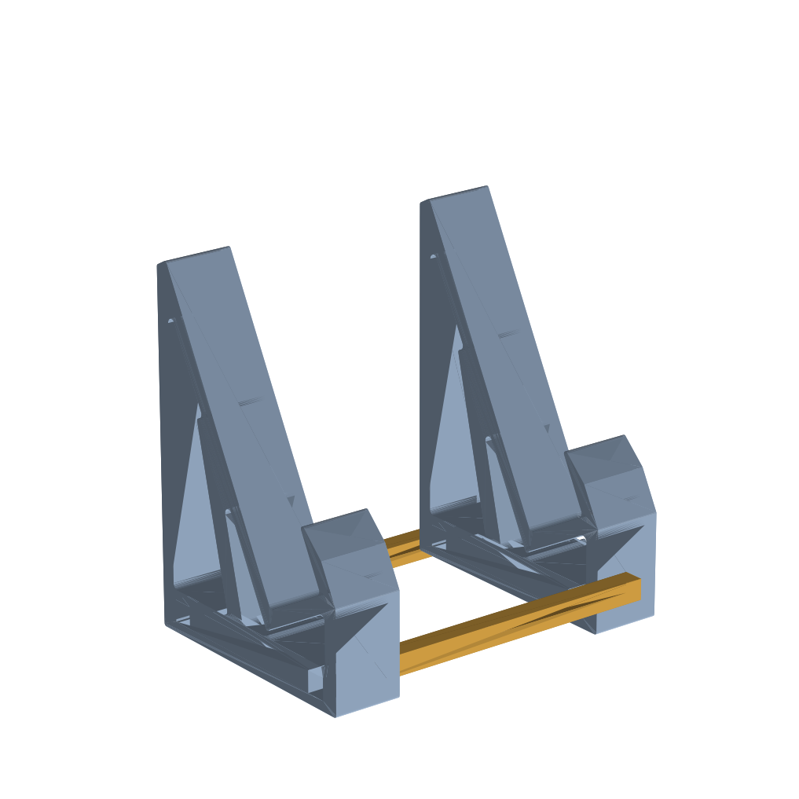
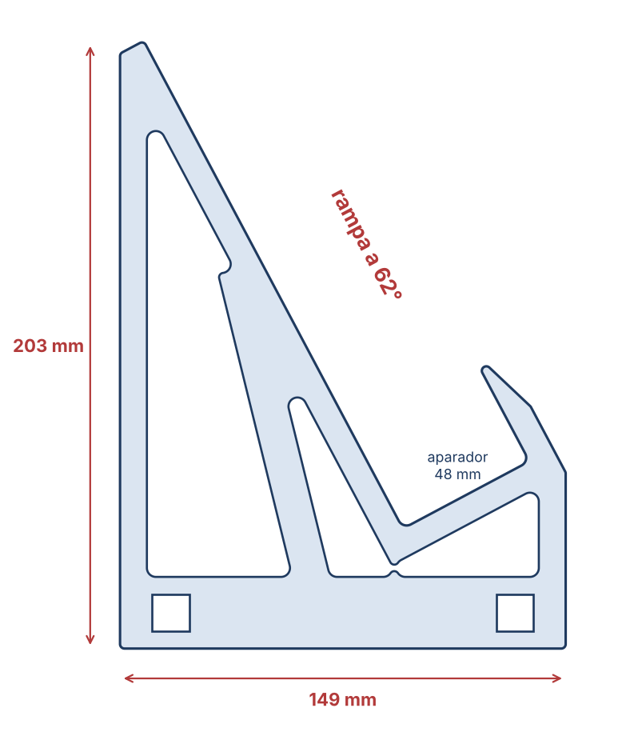

Atril para estudar com o código aberto e inclinado. Ficha técnica, custo de produção e preço de venda.

Duas laterais em treliça, ligadas por duas travessas. O livro aberto apoia a borda de baixo no aparador (48 mm de fundo, cabe meia lombada de um Vade Mecum) e encosta na rampa inclinada a 62°. A aba da frente impede que ele escorregue.
| Arquivo | Qtd. | Medidas |
|---|---|---|
| lateral.stl | 2 | 149 × 203 × 40 mm |
| travessa.stl | 2 | 210 × 12 × 12 mm |
210 mm de largura × 149 mm de profundidade × 203 mm de altura. O livro aberto (~34 cm) passa um pouco para cada lado.

| Item | Recomendado |
|---|---|
| Material | PLA (mais barato) ou PETG (mais resistente a calor e impacto) |
| Orientação | Laterais deitadas, com o perfil na mesa (como o STL já vem). Travessas deitadas. |
| Camada / paredes / preenchimento | 0,2 mm · 3 paredes · 20% giroide ou grade |
| Suportes | Não precisa |
| Tempo e material (estimativa) | ~12 h e ~300–350 g para o conjunto |
| Item por unidade | Valor |
|---|---|
| Filamento (~300 g a R$ 110/kg) | R$ 35 |
| Energia (~12 h a 120 W) | R$ 2 |
| Desgaste da impressora (~R$ 0,70/h, bico e peças) | R$ 10 |
| Peças que falham (~10%) | R$ 4 |
| Embalagem (caixa e proteção) | R$ 6 |
| Seu tempo (acabamento e embalar, ~20 min) | R$ 5 |
| Custo total | ≈ R$ 60 |
| Canal | Preço | Taxas | Lucro | Margem |
|---|---|---|---|---|
| Direto (Instagram + Pix) | R$ 129 | — | ≈ R$ 70 | 54% |
| Mercado Livre (Clássico, ~13%) | R$ 149 | ≈ R$ 20 | ≈ R$ 69 | 46% |
| Shopee (~20% + taxa fixa) | R$ 149 | ≈ R$ 34 | ≈ R$ 55 | 37% |
Frete por conta do comprador ou embutido no preço. As taxas dos marketplaces mudam com frequência: confira as atuais antes de anunciar.
Nos marketplaces já há suportes de livro de madeira ou metal por R$ 40 a 80. Um suporte genérico de plástico perde nessa briga. O que justifica cobrar R$ 129 ou mais:
| Mudança | Ganho |
|---|---|
| Peças mais leves, com menos material | ~6–7 h por unidade: o dobro de produção por impressora |
| Desmontável e plano na caixa | Frete mais barato e caixa menor |
| Espaço para nome ou logo em relevo | Preço maior e produto que não se compara ao genérico |
| Cores do perfil (ex.: verde do Constitucional Gabaritado) | Produto de marca, bom para foto e divulgação |